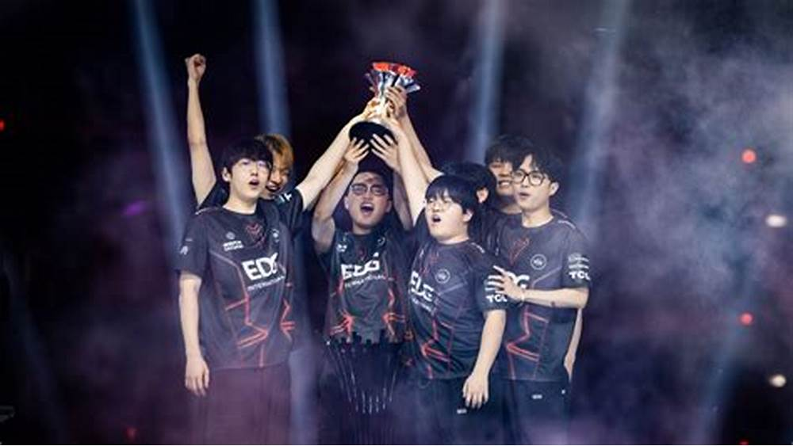

VALORANT Masters Bangkok 2025 - Campeón T1
Fecha: 2 de marzo de 2025
Resumen: El torneo de VALORANT Masters Bangkok 2025 culminó con la victoria de T1, que derrotó a G2 Esports 3-2 en una reñida final. Este evento, que se celebró en Bangkok, Tailandia, fue testigo del alto nivel competitivo de los equipos internacionales.
Detalles del Torneo
El torneo se desarrolló entre el 20 de febrero y el 2 de marzo de 2025, con la participación de 8 equipos. T1 se coronó campeón tras vencer a G2 Esports en la final, logrando así su primer título internacional en VALORANT.
Rendimiento de los Equipos
T1 destacó por su estrategia sólida y ejecución precisa a lo largo del torneo. G2 Esports también mostró un juego brillante, pero no logró superar a T1 en la final. Equipos como Edward Gaming y Team Vitality sorprendieron por su rendimiento en el evento.